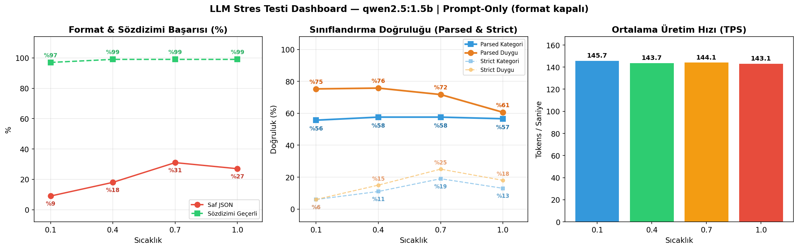
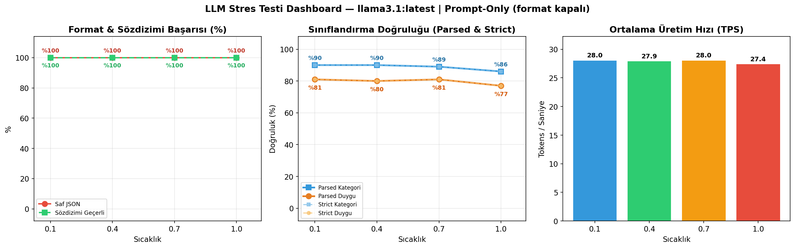

LLM Yapılandırılmış Çıktı & Sıcaklık Stres Testi: Görünürdeki Çelişkiler ve Arkasındaki Gerçekler
3 Yerel LLM (Llama 3.1 8B, Llama 3.2 3B, Qwen 2.5 1.5B) üzerinde format disiplini ile anlamsal başarının 3 katmanda incelenmesi.
Testlerde sentetik veri yerine, internetteki 3 farklı alandan toplanmış ve insan eliyle etiketlenmiş açık kaynak veri seti kullanılmıştır:
Etiketler: 35 Olumlu, 35 Olumsuz
Etiketler: 35 Olumlu, 35 Olumsuz
Etiketler: 60 Nötr (Nesnel bilgi metinleri)
Neden Tek Bir Doğruluk Metriği Yetmez?
Modelin "JSON yazma disiplini" ile "Türkçe metni doğru anlama zekası" birbirinden bağımsızdır.
Model promptta verilen "Hiçbir açıklama veya markdown ekleme" kuralına sıfır toleransla uyup doğrudan { ile başladı mı?
Üretim ortamında hiçbir otomatik kurtarma kodu olmadığını varsayan katıdır. Model başına markdown çiti koyduysa, cevabı doğru olsa bile 0 PUAN (FAIL) alır.
Dış ambalaj (markdown veya gevezelik) temizlendiğinde, modelin içindeki JSON okunur ve Türkçe metnin türü ile duygusunu doğru bilip bilmediği ölçülür.
Sıcaklık Arttıkça Doğruluk Neden Fırladı?
Sıcaklık arttıkça model daha mı zeki oldu, yoksa şans eseri mi kurtuldu?
- Deterministik Alışkanlık: Model T=0.1'de pre-training ezberiyle inatla ```json markdown bloğu açıyordu.
- Haksız Ceza: Katı pipeline saf JSON aradığı için cevap doğru olsa dahi her örneği 0 puan sayıyordu.
- Sıcaklığın Etkisi: Sıcaklık arttıkça model bu refleksi gevşetti; doğrudan { basma olasılığı devreye girdi (%9'dan %31'e çıktı).
- Çıkarım: Model yüksek sıcaklıkta daha iyi anlamadı; sadece tesadüfen markdown çitini unutabildiği için strict puanı yükseldi!

Literatür Çelişkisi: "Düşük Sıcaklık Kuralı" Neden Çöktü?
Akademik Kural: "JSON için T=0 yapın" • Bizim Sonuç: T arttıkça Saf JSON %9'dan %31'e çıktı!
OpenAI, Anthropic ve akademik kıyaslama makalelerinde (JSONSchemaBench, StructuredRAG) genel kabul şudur:
Bizim Qwen 2.5 Testi İse Tam Tersini Gösterdi:
Sıcaklık 0.1'den 0.7'ye çıktıkça Saf JSON oranı %9'dan %31'e tırmandı!
Holtzman et al. (ICLR 2020) — "The Curious Case of Neural Text Degeneration":
- Mode Collapse Tuzağı: T=0.1'de model deterministik greedy decoding'e kilitlenir ve olasılık dağılımındaki en sivri tepeye (peak logit) hapsolur.
- Prior vs Constraint Çatışması: Küçük modelde (1.5B) pre-training'deki devasa ```json ezberi, sistem promptundaki negatif yasaktan ("asla markdown kullanma") daha baskındır.
- Stochastic Escape (Rastlantısal Kurtuluş): T=0.7'de softmax dağılımı yumuşar; model yerel minimumdan (ezber çitinden) kaçıp doğrudan { basabilir!
- Neden 8B'de Olmadı?: Llama 3.1 8B, negatif kısıtlamayı anlayıp ezberini susturacak parametre gücüne sahiptir (T=0.1'de de %100 saf JSON).
"Literatürde düşük sıcaklığın JSON sözdizimini garanti altına aldığı kabul edilse de, 1.5B gibi küçük modellerde düşük sıcaklık 'Mode Collapse' yaratarak modeli pre-training'deki Markdown kod bloğu ezberine kilitlemektedir. Sıcaklığın 0.7'ye çıkarılması, modelin bu yerel tepe noktasından kaçmasını sağlayarak Saf JSON oranını paradoksal biçimde %9'dan %31'e yükseltmiştir."
Daha Büyük Parametre Her Zaman Daha İyi Değildir!
3 Milyar parametreli Llama 3.2, 1.5 Milyar parametreli Qwen'e karşı iki kulvarda da ezildi.
Kuralda "Sadece urun, sinema, ansiklopedi yaz" dendiği halde Llama 3.2; film (51 kez), yorum (27 kez), matkap markaları, davlumbaz, hepsiburada gibi kafasına göre serbest etiketler uydurdu! Bu yüzden kategori başarısı %32'ye çakıldı (Qwen: %57).
Qwen 2.5 400 örnekte 104 kez notr duygusunu başarıyla yakalarken, Llama 3.2 sadece 1 kez nötr diyebildi! Tüm nötr metinleri siyah/beyaz (olumlu/olumsuz) sandı.
Llama 3.2 her yanıtın başına "Aşağıdaki metin oluşturulabilir:" eklediği için Saf JSON oranı %0-3 aralığında kaldı.
Büyük Modellerin "Aşırı Yaratıcılık" Tuzağı
Llama 3.2 diyalog odaklı (RLHF) eğitildiği için verilen 3 kategoriyi fazla sıkıcı ve dar buluyor; metinde elektrikli süpürge görünce "urun" demek yerine "davlumbaz" diyerek kendi bildiğini okuyor.
Qwen 2.5 ise kod ve kural disipliniyle eğitildiği için asla kuralların dışına çıkmıyor.
Bu Deneyi Yapmadan Model Seçmenin Faturası!
"Llama 3.2 (3B) Meta'nındır, kesin daha iyidir" diyerek yola çıkan bir şirketin zaman ve bütçe kaybı (1 Milyon Veri Simülasyonu)
📊 Benchmark Ölçüm Verilerimiz
| Metrik | Qwen 2.5 (1.5B) | Llama 3.2 (3B) | Fark / Sonuç |
|---|---|---|---|
| Token Üretim Hızı | 144.1 TPS | 74.7 TPS | Qwen ~2 kat daha hızlı |
| Ortalama Üretilen Token | 45.8 token | 68.5 token | Llama %50 gereksiz laf kalabalığı |
| İstek Başına Gecikme | 0.343 sn | 0.965 sn | Llama 2.81 kat daha yavaş! |
| Sözdizimi Geçerliliği | %98.5 | %93.2 | Llama'da %6.8 retry gereksinimi |
Llama 3.2 sadece donanımda %50 yavaş olmakla kalmaz; her cevabın başına "Aşağıdaki metin, JSON formatında oluşturulabilir:\n\n" gibi ~23 gereksiz token ekler. Yavaş hız + gereksiz token çarpılınca tek istek süresi neredeyse 3 katına çıkar!
🏢 1.000.000 Kayıtlık Kurumsal Simülasyon (AWS A10G / RTX 4090)
Llama 3.1 (8B) Neden Kusursuz Çalıştı?
Sıfır format hatası, sıfır kod temizliği, %100 saf JSON ve %90 doğruluk.
- Negatif Kısıtlama Eşiği: 8 Milyar parametre seviyesine çıkıldığında model, "Açıklama yapma, markdown koyma" gibi negatif kısıtlamaları anlayıp içindeki diyalog refleksini susturabilecek kapasiteye ulaşır.
- Yüksek Sınıflandırma: Kategori tespitinde %90, duygu tespitinde %81 doğruluk yakalamıştır.
- Strict == Parsed: Saf JSON oranı %100 olduğu için iki eğri birebir çakışmıştır.
- Feda Edilen Şey (Trade-off): Hız! Qwen 144 TPS üretirken, Llama 3.1 ~28 TPS üretir.

Çıkarılan 5 Altın Kural (Takeaways)
1.200 çıkarımlık stres testinden elde ettiğimiz temel mühendislik ilkeleri
Format kuralına uymayan modele 0 puan verirseniz gerçek zekasını kaçırırsınız. Format disiplini ile Türkçe anlama kabiliyeti birbirinden izole değerlendirilmelidir.
Kod ve kural odaklı eğitilen 1.5B Qwen, diyalog odaklı (RLHF) 3B Llama 3.2'yi teknik görevde geride bırakmıştır. Eğitim veri seti tipi mimariden daha belirleyicidir.
Llama 3.2 gibi sohbet modelleri kibarlık refleksiyle cevabın önüne açıklama metni ekleyerek API'ları patlatır, token israfı yapar ve gecikmeyi 2.8 kat artırır.
Küçük modellerde T=0.7 kısırdöngüyü kırıp saf JSON oranını artırırken, T > 0.7 modelin kimliğini unutup serbest felsefe ve makale krizine girmesine yol açar.
10 satırlık hafif bir regex temizleme katmanı, 1.5B parametreli hafif bir modeli %98.5 sözdizimi geçerliliği ve %76 anlamsal doğrulukla kurumsal seviyeye çıkarır.
Yapılandırılmış veri üretiminde başarının anahtarı tek başına model boyutu değil; modelin eğitim türü, uygun sıcaklık seçimi ve sağlam bir temizleme (cleaning) mimarisidir.